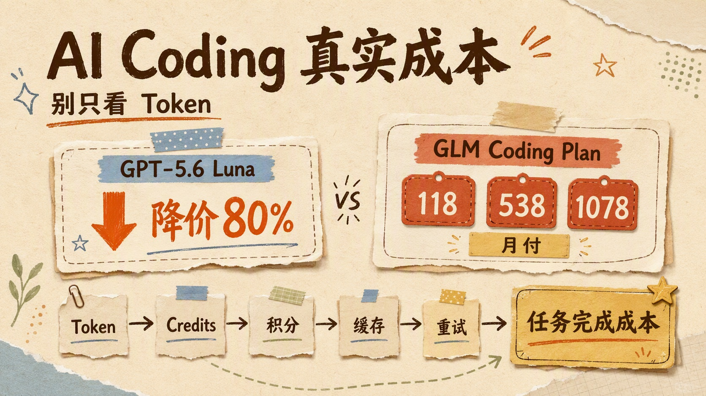
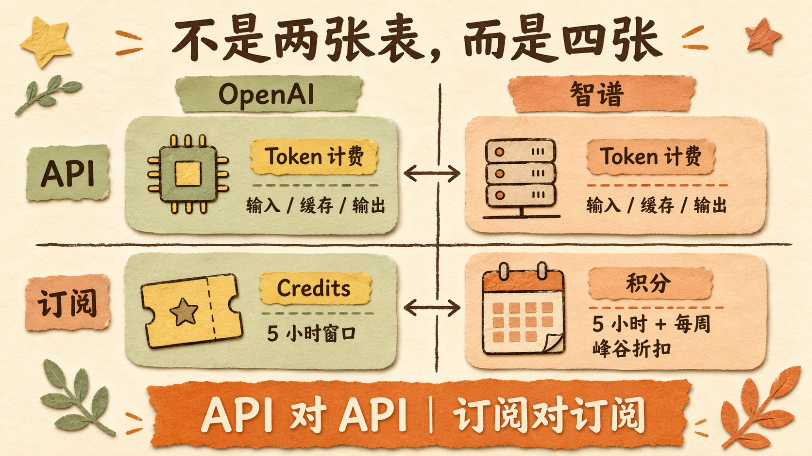
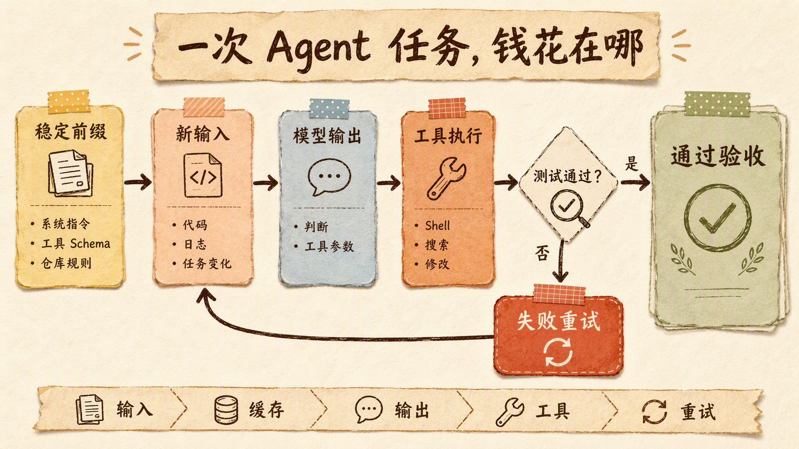
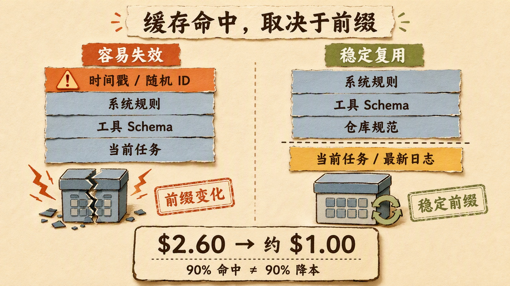
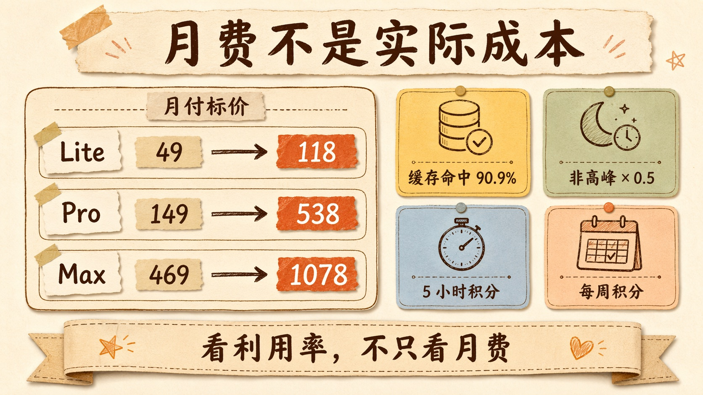
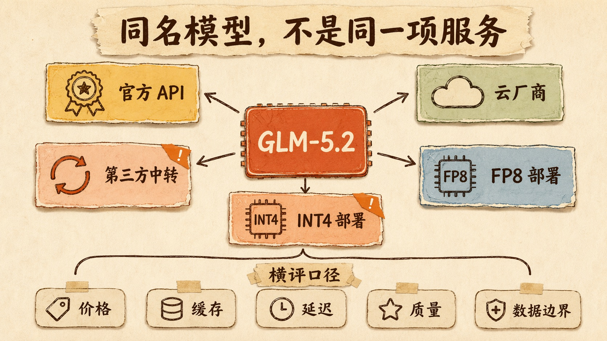
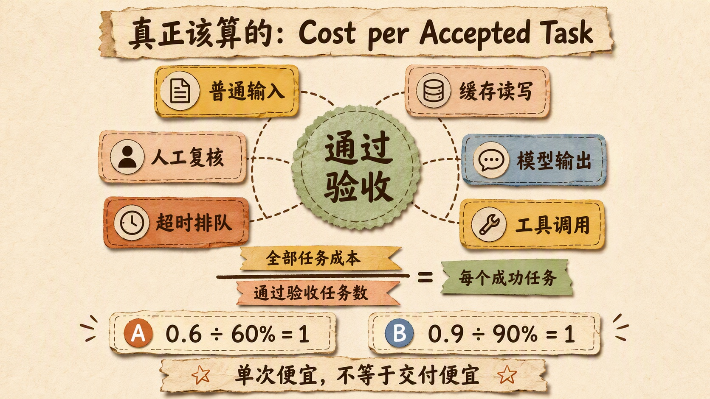

GPT 降价 80%，GLM Coding Plan 却涨了？AI Coding 的真实成本，不能只看 Token

2026 年 7 月 30 日，两张价格表几乎同时摆到了开发者面前。
OpenAI 宣布 GPT-5.6 Luna 的 API 输入价格从每百万 Token 1 美元降到 0.2 美元，输出从 6 美元降到 1.2 美元。降幅 80%。
同一天，GLM Coding Plan 恢复开放订阅。个人版新的月付价格是 Lite 118 元、Pro 538 元、Max 1078 元。与此前公开的 49 元、149 元和 469 元相比，月付门槛明显上升。
评论区很快给出了最直接的反应。
「花钱去买 GPT 吧。」
「现在国外的 Code Plan 都比国内便宜了。」
如果只看这两张价格表，这个结论很自然。一个正在打折，一个正在提价，方向完全相反。
但把资料继续往下翻，问题就出现了。
OpenAI 并不只有按 Token 计费的 API。ChatGPT Work 和 Codex 同样采用订阅额度、Credits、5 小时时间窗口和模型分级，部分套餐还可能有额外周限额。Luna、Terra 降价后，订阅价格与额度预算没有变化，但调用它们会消耗更少 Credits。
智谱也不只有 Coding Plan。GLM-5.2 还有按输入、缓存命中和输出分别计费的标准 API。
所以真正的情况不是「GPT 按量、GLM 包月」。
两家公司都在同时经营 API 和订阅两条轨道。区别在于，这轮 OpenAI 降低了 API 单价和订阅中的额度消耗，智谱则提高了 Coding Plan 的月付门槛，同时重构了积分、峰谷折扣与 MCP 权益。
更麻烦的是，AI Coding 也不是一次输入、一次输出就结束的聊天。Agent 要反复读取代码库、加载工具定义、调用 Shell、运行测试、处理报错、修改代码，再把越来越长的历史上下文送回模型。
同一个任务，缓存有没有命中，输出写了多少，失败后重试几次，模型最终能不能交付，都会让账单变成另一回事。
所以这篇文章不准备回答「GPT 和 GLM 到底谁更便宜」。
这个问题缺少工作负载，根本没有统一答案。
我更想把价格表背后那套容易被忽略的计算方式讲清楚：当大模型从聊天工具变成 Coding Agent，我们到底应该怎样计算一次任务的真实成本？

不是两张价格表，而是四张
要把这次价格变化说清楚，至少要分成四个格子。
| 厂商 | 按量 API | Coding 订阅 |
|---|---|---|
| OpenAI | GPT-5.6 按输入、缓存读写和输出计费 | ChatGPT Work 与 Codex 共享用量，采用 Credits、5 小时窗口和模型分级 |
| 智谱 | GLM-5.2 按普通输入、缓存命中和输出计费 | Coding Plan 采用积分、5 小时与每周额度、峰谷折扣和 MCP 权益 |
API 对 API，比较的是每百万 Token、缓存、长上下文与工具调用。
订阅对订阅，比较的则是月费、时间窗口、周限额、模型折算、超额机制与利用率。
先看 OpenAI 的订阅。
ChatGPT Work 与 Codex 共用一套用量预算。官方没有把它简单写成「每月能发多少条消息」，因为同一条消息可能只是改一个函数，也可能要读取整个仓库、运行数十次工具并保持很长的上下文。
系统会把模型、上下文、推理强度、工具和缓存共同折算成 Credits。当前公开的模型 Credits 权重如下：
| 模型 | 输入 / 1M | 缓存输入 / 1M | 输出 / 1M |
|---|---|---|---|
| GPT-5.6 Luna | 5 Credits | 0.5 Credits | 30 Credits |
| GPT-5.6 Terra | 50 Credits | 5 Credits | 300 Credits |
| GPT-5.6 Sol | 125 Credits | 12.5 Credits | 750 Credits |
三个模型的缓存输入都只消耗普通输入约十分之一的 Credits，输出则是普通输入的 6 倍。选择 Luna，不只是 API 账单更低，订阅额度也能支撑更多高频任务。
OpenAI 官方给出的 Plus 档估算很直观。在一个 5 小时窗口内，Sol 大约对应 10～100 条本地消息，Terra 是 25～200 条，Luna 则是 250～2000 条。这个范围很宽，因为消息数量从来不是稳定计量单位，真实消耗仍取决于任务复杂度。
额度耗尽后，Plus 和 Pro 用户可以购买额外 Credits，也可以切换到更小的模型；额外本地任务还可以改用 API Key，按标准 API 价格付费。
再看 GPT-5.6 API。
OpenAI 这次调整的是标准 API 价格。每向模型发送一批 Token，平台按输入、缓存输入、缓存写入和输出分别计费。
| 模型 | 普通输入 / 1M | 缓存输入 / 1M | 缓存写入 / 1M | 输出 / 1M |
|---|---|---|---|---|
| GPT-5.6 Luna | $0.20 | $0.02 | $0.25 | $1.20 |
| GPT-5.6 Terra | $2.00 | $0.20 | $2.50 | $12.00 |
| GPT-5.6 Sol | $5.00 | $0.50 | $6.25 | $30.00 |
Luna 的普通输入与输出均下降 80%，Terra 下降 20%，Sol 保持原价。
这张表很清楚。调用多少，支付多少。
但里面已经埋着两个容易被标题忽略的条件。
一个是缓存写入并不免费。GPT-5.6 的缓存写入价格是普通输入的 1.25 倍，后续读取才降到普通输入的十分之一。
另一个是长上下文加价。对超过 272K 输入 Token 的请求，GPT-5.6 会进入长上下文计价，完整请求按普通输入 2 倍、输出 1.5 倍收费。
至于 Sol 新增的 Fast mode，也不是「加速不加价」。官方写得很明确，速度最高达到标准模式的 2.5 倍，价格则是标准模式的 2 倍，模型智能水平不变。
所以 Luna 降价 80% 是准确事实。
「所有 GPT-5.6 调用成本都下降 80%」则不是。
GLM 也有与之对应的标准 API。当前 GLM-5.2 每百万 Token 普通输入 8 元、缓存命中 2 元、输出 28 元。Coding Plan 则是另一条订阅轨道。
Coding Plan 卖的不是一包可以任意调用的 API Token，而是专门供 Claude Code、OpenCode、TRAE、OpenClaw 等受支持编码环境使用的订阅权益。普通 API、自建网站、SaaS 和机器人调用不共享这份额度。
新的个人套餐同时受每 5 小时和每周积分约束。
| 套餐 | 5 小时积分 | 每周积分 |
|---|---|---|
| Lite | 2,000 | 10,000 |
| Pro | 12,000 | 60,000 |
| Max | 28,000 | 140,000 |
积分也不是按「一次对话」简单扣除。
以 GLM-5.2 为例，普通输入、缓存输入和输出的抵扣系数分别是 6.9、1.7 和 24。模型生成 1 个输出 Token，消耗的积分约是 1 个普通输入 Token 的 3.48 倍、1 个缓存输入 Token 的 14.1 倍。
调用时间也会改变结果。工作日 14 点到 18 点是高峰，其余非高峰时段只按基础积分的 50% 抵扣。
此外，套餐还加入了联网搜索、网页读取、开源仓库、视觉理解等 MCP 权益。
这套商品已经从「多少次 Prompt」变成了「模型、缓存、输出、时段和工具共同折算出的 Coding 工作量」。
因此，GLM 的月付标价确实上涨了。
但它不是一件参数完全不变的商品，从 49 元直接换成 118 元。
两套订阅策略其实很像。都有 5 小时窗口，都按模型等级区分消耗，都把缓存输入算得更便宜，复杂任务也都会更快吃掉额度。
差别同样具体。
OpenAI 当前公开规则中没有 Coding Plan 那样的峰谷折扣，但允许购买额外 Credits，也可以切到 API Key 继续运行。GLM 在非高峰期按 50% 积分消耗，套餐额度用完后则要等待窗口恢复，不会自动扣标准 API 余额。
如果文章只把 Luna API 和 GLM 月费放进一张红绿对比图，传播效果会很好，结论却经不起追问。
真正公平的做法，是 API 对 API，订阅对订阅。
这不是在替任何一家厂商辩护。
只是价格比较最起码要同口径。
为什么 Agent 一运行，Token 单价就开始失真
普通聊天的成本很容易理解。
用户输入一句话，模型生成一段回答，输入 Token 加输出 Token，就是一次调用的主要费用。
Coding Agent 的链路长得多。
它启动时要读取系统指令、仓库规则、工具 Schema 和当前任务；接着搜索文件、打开代码、执行命令；工具结果回到上下文后，模型再决定下一步。一次修复可能经历十几轮甚至几十轮「模型判断—工具执行—结果回传」。
而且上下文会越滚越长。
第一轮读取的 AGENTS.md、工具定义和任务要求，后面每一轮还要继续带着。前面已经看过的代码、执行日志和修改结果，也可能反复进入输入。
于是 Agent 的账单里出现了四种不同的 Token。
第一种是新输入。刚打开的文件、新的错误日志和用户追加的要求，都属于这部分。
第二种是重复前缀。系统指令、工具定义、仓库规范和没有变化的历史消息，如果前缀保持一致，就可能命中 Prompt Cache。
第三种是模型输出。解释越长、工具参数越复杂、推理轨迹越多，这部分越贵。
第四种是失败产生的 Token。走错路径、工具报错、测试没通过，前面花掉的 Token 不会退回，只会进入下一轮上下文。
这时再问「每百万 Token 多少钱」，就像只看汽油单价判断一辆货车的运输成本。
油价当然重要。
但空驶率、载重量、路线和能不能按时送到，同样决定最后一公里花了多少钱。

Cache Hit Ratio，为什么评论区说它才是大头
评论区里有一句话很关键：
Agent Cache Hit 比例才是大头。
这个判断有官方数据支持。
智谱在 Coding Plan 文档里，直接采用 90.9% 作为编程场景的平均缓存命中率，并以此估算套餐可用量。OpenAI 公布的 Blitzy 案例也显示，工作流从一次结构化输出改成完整工具调用循环后，Prompt Cache 复用率从 24% 提高到 90%，处理的上下文增加到 2.2 倍，输出 Token 反而减少了 8.5 倍，最终成本比 GPT-5.4 mini 低 87%。
为什么缓存会有这么大影响？
因为 Agent 的输入里，真正每轮都变化的内容可能只占一小部分。
系统提示没有变。
几十个工具的 JSON Schema 没有变。
仓库规则没有变。
任务最初的要求也没有变。
如果这些内容每轮都保持相同顺序，服务商就可以复用前缀已经完成的计算，后续只处理新增部分。这就是 Prompt Cache 或 Prefix Cache。
它和单次推理内部的 KV Cache 有联系，但不是一回事。
KV Cache 保存当前请求已经计算出的 Key 和 Value，让 Decode 阶段不必反复计算历史 Token。Prompt Cache 则把相同前缀的计算结果跨请求复用，让后续请求跳过一部分 Prefill。
前者是一次生成能高效继续的基础。
后者决定重复上下文要不要反复付钱。
把一个公开算式摆出来，体感会更直接。
假设某个 Luna 工作流连续发出 100 次请求。每次输入 10 万 Token，其中 9 万是稳定前缀，1 万是本轮新增内容；每次平均输出 5000 Token。为了便于理解，这里只演示标准短上下文价格，不考虑工具费和失败重试。
完全不使用缓存时：
1 | 输入：100 × 100K = 10M Tokens |
如果 9 万 Token 的稳定前缀成功复用：
1 | 首次缓存写入：0.09M × $0.25 = $0.0225 |
同一个模型，同一个标价，只因为前缀缓存设计不同，账单就从 2.60 美元降到了约 1 美元。
但也别急着把 90% 缓存命中理解成 90% 总成本下降。
缓存写入要付费，新增输入照常计费，输出通常更贵，工具调用和失败重试也没有消失。上面的示例中，输入的大部分已经命中缓存，最终总成本只下降约 61.5%。
问题就在这里。
Cache Hit Ratio 很重要，却仍然不是完整答案。
真正值得监控的至少有缓存命中 Token、缓存写入 Token、普通输入 Token、输出 Token，以及缓存因为前缀变化而失效的次数。
如果只展示「缓存读取低至普通输入的十分之一」，却不告诉用户到底命中了多少，这张价格表仍然缺了一半。
缓存不是模型送的折扣，而是系统设计出来的
缓存命中率看起来像服务商指标，实际上很大一部分取决于 Agent Harness 怎样组织上下文。
工具定义的顺序每轮变化，前缀可能失效。
把当前时间、随机 ID 和实时状态放在系统提示最前面，后面的稳定内容也可能无法复用。
每一轮都重新拼接一份格式略有不同的仓库摘要，肉眼看着差不多，Token 前缀却已经变了。
多 Agent 系统如果给每个子 Agent 动态裁剪不同工具，能减少单次上下文，但也可能打散原有缓存前缀。这里没有永远正确的选择，需要在上下文体积、工具选择准确率和缓存复用之间权衡。
一个更适合缓存的上下文，通常把内容分成两段。
前面放稳定部分，例如系统规则、工具 Schema、项目规范和长期不变的参考资料。
后面放动态部分，例如当前任务、最新工具结果、实时状态和本轮新增文件。
稳定内容尽量保持字节级一致，动态内容再往后追加。
这件事很像仓库打包。
每天都要发货的标准物料，提前放进固定货箱；订单临时增加的东西，装在最后一层。如果每来一张订单就把仓库重新摆一遍，再好的物流系统也复用不了之前的工作。
所以缓存不是调用 API 时顺手勾选的一个选项。
它是上下文工程、工具路由和会话管理共同产生的结果。

月付 118 元，到底贵不贵
回到 GLM Coding Plan。
旧版公开月付价格是 Lite 49 元、Pro 149 元、Max 469 元。新版变成 118 元、538 元和 1078 元，标价分别提高约 141%、261% 和 130%。
如果一个用户原本每月只花 49 元，现在需要支付 118 元，他感受到的就是涨价。
这种感受不需要被纠正。
但从工程成本看，还要继续问几件事。
新套餐能用哪些模型？每周有多少积分？普通输入、缓存输入和输出怎样折算？用户主要在高峰还是非高峰运行？是否能用满额度？MCP 权益有没有实际价值？
智谱给出的官方估算是，在全部使用 GLM-5.2、缓存命中率为 90.9% 时，Lite 每周大约可使用 0.43 亿至 0.87 亿 Token，Pro 为 2.63 亿至 5.26 亿，Max 为 6.13 亿至 12.26 亿。区间差异来自峰谷时段。
官方还给出一个「最高节省 92%」的说法。
这个数字有明确前提：充分利用非高峰折扣，并拿 Coding Plan 与按量调用 GLM-5.2 标准 API 比较。
它不是每位订阅用户都会自动获得的折扣。
低频用户可能根本用不满每周积分。工作时间集中在下午的团队，也未必能充分吃到非高峰优惠。输出比例较高、频繁使用 GLM-5.2 或大量调用 MCP，积分消耗还会更快。
订阅制最容易制造一种错觉：付完月费以后，后面的调用都是免费的。
其实用户购买的是一个带时间窗口的容量池。用不满，未消耗的额度就是沉没成本；用得太快，又会撞上 5 小时或每周上限。
所以判断 Coding Plan 是否划算，不能只算「月费除以官方最大 Token」。
还要算利用率。
1 | 订阅有效成本 |
对于每天高频运行 Coding Agent、上下文重复度高、可以避开高峰的用户，订阅可能很划算。
对于偶尔让模型改几段代码、用量波动大、需要自建 API 或必须保证随时可用的团队，按量计费可能更灵活。
贵不贵，取决于使用曲线。
不是取决于海报上的最大数字。

同名模型，也可能不是同一项服务
评论区还有一个提醒很专业：做模型 Provider 横评时，不能只抄 API 价格。
同一个模型名称，经由官方 API、云厂商和第三方中转调用，价格、缓存、限速和数据边界都可能不同。
OpenAI 的价格页明确写明，区域数据驻留端点会加价 10%，Amazon Bedrock 的价格也可能与 OpenAI 直连不同。
Anthropic 的缓存机制又是另一套规则。5 分钟缓存写入按普通输入的 1.25 倍收费，1 小时写入为 2 倍，缓存命中读取则是 0.1 倍。不同合作云平台还可能有独立区域定价。
第三方中转站通常会展示一个很低的普通输入价格，但下面这些问题更重要：
- 缓存读写是否完整透传；
- 缓存是否按用户、项目或上游 Provider 隔离；
- 长上下文是否加价；
- 高峰期是否限速、排队或自动降级；
- 请求失败后是否切换到另一个 Provider；
- 工具调用、图片和搜索如何计费；
- 数据经过哪些系统，日志保留多久。
还有量化。
GLM-5.2 已经开放 BF16 和 FP8 权重，也存在大量 INT8、INT4 社区量化版本。4-bit 权重能显著降低显存需求，让更多空间留给 KV Cache，也可能提高某些部署的吞吐。
但它不能与官方托管服务自动画等号。
量化方法、推理框架、上下文长度、并发配置和硬件都会影响速度与质量。某个量化版本在一组推理题上没有明显掉点，不代表它在长代码生成、工具调用和百万上下文中同样没有损失。
同名模型只是起点。
真正公平的横评，应该锁定模型版本、权重精度、上下文、工具、提示词、任务集和验收标准，再比较每个成功任务的成本。

真正该算的，是 Cost per Accepted Task
OpenAI 在这次降价公告里反复使用一个口径，叫 cost per task。
不是每百万 Token 成本。
是完成一项任务花了多少钱。
我觉得还可以再严格一点，计算 Cost per Accepted Task，也就是「每个通过验收任务的成本」。
1 | 每个通过验收任务的成本 |
这里最容易漏掉的是分母。
假设 A Provider 每次尝试只花 0.6 元，但一次成功率是 60%；B Provider 每次花 0.9 元，一次成功率是 90%。为了演示公式，暂时假设失败后独立重试，也不计算额外上下文增长。
那么：
1 | A：0.6 ÷ 60% = 1 元 / 成功任务 |
页面标价相差 50%，交付成本却一样。
真实 Agent 任务中，失败重试通常还会更贵。因为第二次尝试不是从空白开始，错误日志、补充解释和已经走过的路径都会进入上下文。重试次数一多，成本不是简单乘法，而是带着更长上下文继续增长。
任务成功率也不能由模型自己宣布。
代码 Agent 说「已经修复」不算成功。测试通过、构建成功、Diff 没有越界、目标功能得到验证，才进入分母。
研究 Agent 说「资料充分」也不算成功。引用能够访问、来源支持对应论断、时间与统计口径一致，才算通过。
到了这一层，模型价格就和 Harness、Loop、Graph 连在了一起。
Harness 决定上下文怎样组织、工具是否稳定、缓存能否命中。
Loop 决定失败后怎样获得证据、是否重试、何时停止。
Graph 决定任务走哪些节点，哪里并行，哪里必须审核，哪些步骤可以交给便宜模型。
一套糟糕的 Agent Harness，可以把最便宜的模型用得很贵。
一套设计得好的工作流，也能让昂贵模型只出现在真正需要它的地方。

GPT 在降边际成本，GLM 在重做容量套餐
把两家公司的动作放回 Agent 这个背景，方向其实没有表面上那么相反。
OpenAI 把 Luna 的 API 价格压到上一代 nano 模型附近，却保留工具调用、长上下文和多步工作流能力。过去只能拿便宜小模型做分类、抽取和排序，现在可以让它承担代码审查、后台监控、测试生成和高频验证。
Luna 降价 80%，降低的是每多运行一次 Agent Loop 的边际成本。这个变化同时进入 Codex 和 ChatGPT Work：订阅价格与总额度预算不变，Terra 和 Luna 消耗的 Credits 减少，同一笔订阅费可以让 Agent 多跑几轮。
GLM 则在把 Coding Plan 从简单次数套餐改造成按模型、缓存、输出、时段和 MCP 共同折算的容量产品。月付门槛提高了，但计量方式也更接近真实 Agent 负载。
这两种动作都在争夺同一件东西。
高频工作流。
模型厂商已经不满足于偶尔回答一个问题。它们希望模型常驻在代码仓库里，持续读取、修改、检查和复核。一次调用便宜固然重要，更重要的是一天运行几百次后，用户是否还愿意让它继续跑。
Token 价格战没有结束。
只是战场正在从「谁的一百万 Token 更便宜」，转向「谁能用更少的钱交付一个被接受的结果」。
这里面会同时比模型能力、推理效率、缓存命中、上下文管理、工具可靠性、工作流设计和服务稳定性。
价格表越来越短。
真正的成本模型越来越长。
写在最后
看到 GPT 降价 80%，第一反应是国外模型开始掀桌子。
看到 GLM Coding Plan 提高月费，第一反应又是国产模型正在涨价。
两种感受都能理解。
但做工程判断时，最好再往下多看一层。
API 单价回答的是「这批 Token 多少钱」。两家公司都有这张表。
订阅价格回答的是「一个月进入这个容量池要多少钱」。两家公司也都有时间窗口、模型折算和额度规则。
缓存命中率回答的是「有多少重复计算不必重新付费」。
任务成功率回答的是「这些钱最后有没有换来可验收的结果」。
Provider、量化、限流、长上下文和工具费用，则决定价格表上的数字能不能落到你的真实工作流里。
如果只想记住一个判断，我会选这句：
别再只比较每百万 Token 的价格。比较同一个任务，在同一套验收标准下，完成一次到底花多少钱。
毕竟我们真正想买的，从来不是 Token。
是工作被完成。
参考资料
- OpenAI, Advancing the price-performance frontier with GPT-5.6
- OpenAI, ChatGPT Work 与 Codex 定价、额度及 Credits
- OpenAI API, Pricing
- OpenAI API, Fast mode
- 智谱 AI, GLM Coding Plan 套餐概览
- 智谱 AI, GLM Coding Plan 常见问题
- 智谱 AI, GLM 模型 API 价格
- Z.ai, GLM-5.2-FP8 官方模型卡
- Anthropic, Claude API Pricing
- 《证券日报》, 大模型 Coding Plan 历史价格报道
- 中国电信天翼云, GLM Coding Plan 历史产品文档